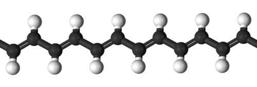
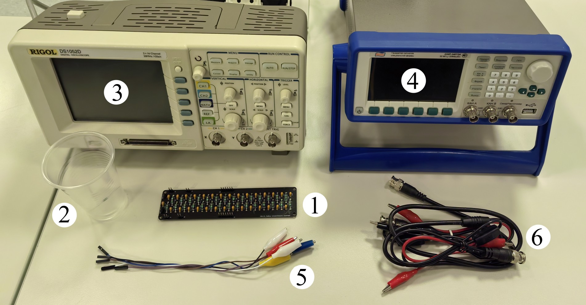
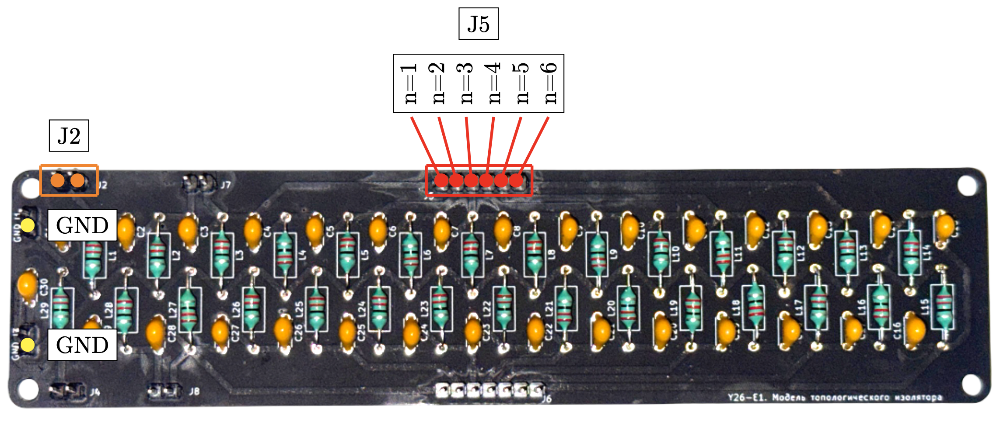
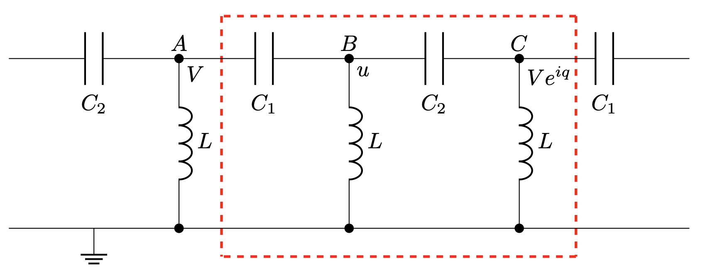
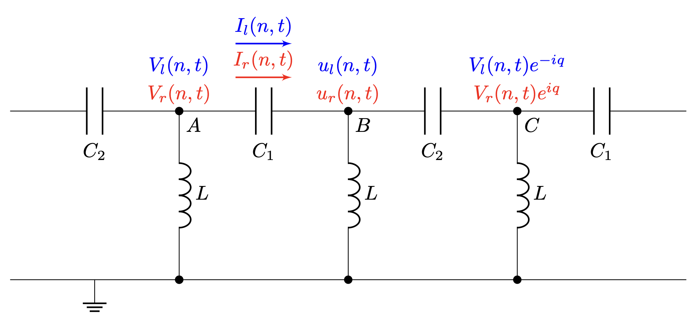
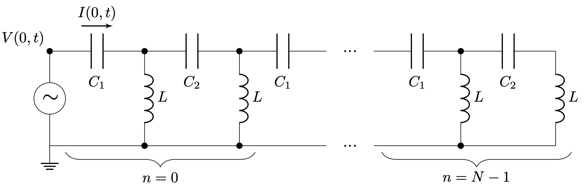

Y26 (2026) — English translation
In this problem, error estimation is not required!
At the end of the twentieth century, the Su-Schiffer-Heeger (SSH-chain) model was proposed to describe the electrical conductivity properties of polyacetylene, which laid the foundation for topological physics. Topologically protected edge states arise at the ends of topologically nontrivial systems. In this problem we will consider an LC circuit, the simplest system that models a polyacetylene molecule and has topological properties.
In this problem we will consider an LC circuit, the simplest system that models a polyacetylene molecule and has topological properties.
Rice. 1. Polyacetylene molecule


Board with an LC circuit consisting of capacitors of unknown capacity $C_1$ and $C_2$ ($C_1 < C_2$) and inductors $L=18~\text{мкГн}$ Resistor $R=200~\text{Ом}$ Oscilloscope Generator (supply voltage with an amplitude of no more than $2$ V) Mother-banana wires (5 pcs.) Wires BNC crocodile (3 pcs.)
Note: Remove the mother-banana wire from the board strictly vertically so as not to damage the contacts!
Rice. 2. Board with LC circuit

For measurements on the board, contacts J5, J2 and GND are available (see Fig. 1): each of the J5 contacts is responsible for connecting to the circuit link with the number $n$; J2 is responsible for connecting to the circuit input; The grounding of the generator and oscilloscope must be connected to GND.
Pins J5, J2 and GND are available for on-board measurements (see Fig. 1):
Consider a chain consisting of capacitors $C_1$ and $C_2$ ($C_1 < C_2$) and inductors $L$. A generator is connected to the leftmost link of the circuit, which excites voltage waves in the circuit. We will assume that there is no reflected wave, the traveling wave propagates from left to right. The circuit is shown in Fig. 3. One link is indicated by a red rectangle. Let us denote the potential of the node $A$ at the input to the link $V$, and the potential of the node $B$ by $u$. The lower branch of the chain is grounded.
The circuit is shown in Fig. 3. One link is indicated by a red rectangle. Let us denote the potential of the node $A$ at the input to the link $V$, and the potential of the node $B$ by $u$. The lower branch of the chain is grounded.

Let's imagine the voltage wave in complex form $$V(n,t) = Ve^{-i\omega t+iqn},$$ $$u(n,t) = ue^{-i\omega t+iqn},$$ где $n$ — номер звена цепочки, $\omega$ — круговая частота сигнала, $q$ — волновой вектор. Дисперсионным соотношением называется зависимость $q(\omega)$.
$⟦ M8⟧$ $$u(n,t) = ue^{-i\omega t+iqn},$$
где $n$ — номер звена цепочки, $\omega$ — круговая частота сигнала, $q$ — волновой вектор. Дисперсионным соотношением называется зависимость $q(\omega)$.
Note that the resulting equations hold for both finite and infinite chains.
Depending on the value of the argument, the real and imaginary part of the arccosine of a real number is expressed as follows: \Im\bigl(\arccos x\bigr)= \begin{cases} 0, & |x|\le 1,\\[4pt] \mathrm{arcosh} x, & x>1,\\[6pt] \mathrm{arcosh} x, & x<-1. \end{cases}\]
If you failed to complete step A2, in the future consider that the dependence of $\cos{q}$ on $\omega$ has the form $$\cos q = 1-\dfrac{A}{\omega^2}+\dfrac{B}{\omega^4}.$$ Положительная мнимая часть волнового вектора отвечает за экспоненциальное затухание амплитуды напряжения от звена к звену, а действительная — за сдвиг фаз амплитуд напряжений звеньев: \[ V_{n+1} = V_n e^{-\mathfrak{I} (q)} e^{i \mathfrak{R} (q)}. \]
Подключите генератор к J2 , соединив его землю с контактом GND . С помощью контактов, обозначенных J5 , измеряйте напряжение на соответствующих звеньях цепи для определения волнового вектора $q$.
The obtained dependences make it possible to obtain the dispersion relation for a given chain. Using the imaginary $\Im(q)$ and real $\Re(q)$ parts of $q$, we can determine $\cos{q}$, which will be a complex number determined by the system parameters and the cyclic frequency $\omega$. \[\cos{q}=\cos{\Re(q)} \cosh{\Im(q)}-i\sin{\Re(q)}\sinh{\Im(q)}.\]Since either the imaginary or the real part $q$ are equal to zero over almost the entire measurement range, we will further neglect the imaginary part $\cos{q}$.
In Part A of the problem, we did not take into account the reflected wave, which can also propagate in the circuit. However, at high frequencies, the wave traveling from the generator practically does not attenuate, so the reflected wave cannot be neglected. Let's consider a circuit that is connected to the generator on the left and has $N$ links (see Fig. 5). Let us denote the wave traveling to the right by the index $r$ (it was the one that was studied in part A), and to the left by the index $l$, then the voltage in these waves depends on the link number $n$ and time $t$, as $$V_r(n,t) = V_{0r}e^{-i\omega t+iqn},$$ $$V_l(n,t) = V_{0l}e^{-i\omega t-iqn}.$$ Таким образом, все уравнения, записанные для бегущей вправо волны, аналогичны уравнениям для бегущей влево волны с заменой $q \rightarrow -q$. Токи в каждой из волн (см. рис. 4) связаны с напряжением через импеданс $$z_r = \frac{V_r(n,t)}{I_r(n,t)},\quad z_l = \frac{V_l(n,t)}{I_l(n,t)}.$$ Полным импедансом цепи называется величина $$z = \frac{V(0,t)}{I(0,t)}.$$
Рассмотрим цепь, которая слева подключена к генератору и имеет $N$ звеньев (см. рис. 5). Обозначим волну, бегущую вправо, индексом $r$ (именно она исследовалась в части A), влево — индексом $ l$, тогда напряжения в этих волнах зависит от номера звена $n$ и времени $t$, как
$$V_r(n,t) = V_{0r}e^{-i\omega t+iqn},$$ $$V_l(n,t) = V_{0l}e^{-i\omega t-iqn}.$$ Таким образом, все уравнения, записанные для бегущей вправо волны, аналогичны уравнениям для бегущей влево волны с заменой $q \rightarrow -q$. Токи в каждой из волн (см. рис. 4) связаны с напряжением через импеданс
$$z_r = \frac{V_r(n,t)}{I_r(n,t)},\quad z_l = \frac{V_l(n,t)}{I_l(n,t)}.$$
Полным импедансом цепи называется величина $$z = \frac{V(0,t)}{I(0,t)}.$$
Fig. 4. Waves in an LC circuit

Rice. 5. Final LC circuit

Next, assume that $\omega \gg \dfrac{1}{\sqrt{LC_1}}, \dfrac{1}{\sqrt{LC_2}}$.
Connect the ground of the generator to the GND pin, connect the “plus” of the generator through a resistor to pin J2. On the board you will receive a circuit consisting of $N$ links, shown in Fig. 4. By measuring the voltage across the resistor, you can get the current in the circuit by measuring the voltage at the J2-GND pins - the voltage in the circuit. In this way, the impedance of the circuit can be determined. Note: You may notice that in a real circuit there is another coil connected parallel to the links. However, its existence does not affect the position of the impedance modulus maxima, so it can be ignored when solving the problem.
Note: You may notice that in a real circuit there is another coil connected parallel to the links. However, its existence does not affect the position of the impedance modulus maxima, so it can be ignored when solving the problem.
Source: https://pho.rs/p/5013